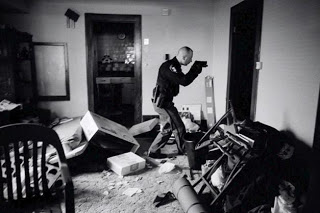

Sometimes a paradox will yield its meaning to someone willing to invest just a little thought.
Take, for instance, the observation that a vacuum cleaner that sucks, doesn't.
Or consider the fact that it is impossible for someone to be the "most mediocre" in a given field, since that person would then excel at mediocrity.
The paradox propounded by Attorney General Eric Holder last week is hardly as benign as either of those examined above.
Speaking in commemoration of Black History Month, Mr. Holder -- the first black U.S. Attorney General, appointed to that position by the first black U.S. President -- insisted that the absence of rancorous racial debate is a symptom of deeply entrenched racial problems in American society.
No, he's not Eric Holder: Unlike the hack lawyer serving as A.G., the British actor Anton Phillips has always made an honest living.

At least, that's my take-away from the following statement:
"Though this nation has proudly thought of itself as an ethnic melting pot, in things racial we have always been and continue to be, in too many ways, essentially a nation of cowards. Though race related issues continue to occupy a significant portion of our political discussion, and though there remain many unresolved racial issues in this nation, we, average Americans, simply do not talk enough with each other about race.... [I]f we are to make progress in this area we must feel comfortable enough with one another, and tolerant enough of each other, to have frank conversations about the racial matters that continue to divide us."
For a generation, Americans have aspired to assess individuals on the basis of character and achievement rather than skin color. Now the most powerful lawyer in the world has described the effort to build a color-blind society as a reflection of some embedded national character flaw.
Taken by themselves, Holder's words were hardly the stuff of militancy. But the gratuitous insult (are we really a "nation of cowards" because we have better things to do than rummage around in search of racial resentments?) and the speaker's posture of incurable grievance leave me with a weary suspicion that the Obama administration, rather than putting Jesse Jackson-style race-hustling out of business, is prepared to escalate it by several orders of magnitude.
What Holder said may ultimately be less important than the audience to whom he said it: He was addressing a gathering of tax-supported legal predators, the kind of people whose professional prospects -- beginning with basic job security -- would brighten considerably were the United States to undergo a prolonged spasm of racial conflict.
Think of the careers that could be made in "hate crime" prosecution; the federal lawsuits that could be launched against public institutions deemed to be insufficiently (or improperly) race-conscious; the opportunities to expand the power and reach of Leviathan, if race riots were once again ignited in major cities.
And think as well of the abundant opportunities for racial arsonists to foment conflict as the economy continues its relentless descent, leaving local economies dessicated and local communities brittle with incurable frustrations. Over the next several months, a cascading wave of retail bankruptcies will leave shopping malls darkened and deserted. The proliferation of what Gerald Celente calls "Ghost Malls" will add to the expanding blight of empty neighborhoods, creating a suitable backdrop for apocalyptic urban conflicts.


Symbol of our times: Time magazine's award-winning photo of a Sheriff, his gun drawn, inspecting a foreclosed home.Wherever a spark of racial conflict is struck, we can expect to find the Feds -- as well as their allies and deniable assets -- spreading accelerant.
If the resulting conflagration is big enough, our rulers -- helpful people that they are -- will be more than willing to extinguish it, albeit by sucking the oxygen of individual liberty out of our society completely.
It would obviously be to the advantage of our rulers for Americans to think of ourselves as members of ethic collectives that they define for their purposes. The most obvious of those purposes would be simply to keep us divided and inconsolably hostile toward each other. This process, as Holder probably understands, begins with supplying a racial subtext for discussion of practically every public issue of consequence.
As the economic decline accelerates, the temptation to racialize our grievances will become more seductive to an ever-greater number of people. The good news, ironically, is that the unfolding economic crisis is breaking up the media monolith that the Regime has relied on to indoctrinate the masses.
The "news" networks are playing to an ever-smaller and increasingly decrepit audience; the weekly news magazines are either disappearing or radically altering their format; newspaper chains are withering, link by link. The conventional media will probably become more localized, the "alternate" media more influential.
At some point, the Obama Regime may actually propose the nationalization of the news industry, which would actually make the samizdat media that much more effective and credible. (In the old Soviet Union, the common wisdom was that there was no "truth" in Pravda, and no reliable "news" in Izvestia.)
Hopefully, through the proliferation of independent media and because of the transparent cynicism of the Obama Regime in promoting ethnic antagonisms (at present, they're merely warming up), it will be possible to immunize a healthy segment of the population against the effort to foment a full-blown race war.
We're not there yet, but stick around: A citizen of Zimbabwe displays a 100 million dollar note.

One useful preventative treatment would be to encourage Americans of all backgrounds to ask themselves why they should continue to be plundered on behalf of a socialist plutocracy. Another would be to emphasize shared concerns over the ever-growing menace of the State's armed enforcers -- a problem that certainly transcends arbitrary and increasingly useless ethnic divisions.
Roughly a decade ago, Jesse Lee Peterson, founder of the black advocacy group BOND (Brotherhood Organization of a New Destiny), commented to me that the white American population was just beginning to experience many of the social pathologies cultivated by the welfare state that had long afflicted black Americans. Those afflictions include multi-generational illegitimacy, multi-generational dependency, and the effective disappearance of fathers in the home and stable households.

In a similar fashion, the increasing militarization of law enforcement and the ever-growing trend of unpunished abusive police behavior have introduced Americans of all backgrounds to conditions long familiar to some black inner-city Americans. This provides another tragic but useful source of shared concerns.
The unalloyed truth is that our rulers intend to make helots out of all of us, irrespective of race, creed, or color, and to that end they are eager to exploit the potential for conflict created by those divisions.
Perhaps the best we can hope for would be that the Regime will press too hard, too soon, causing the "union" to disintegrate with relatively little violence. Since there is, quite literally, not enough wealth in the entire world to service the Regime's financial obligations, the bleak reality is that the entity calling itself the United States of America simply cannot survive in its current form.
Liberty would fare much better if the American soyuz were to disintegrate into several smaller polities, instead of remaining monolithic up until its terminal implosion. If the Obamunists employ the same heavy-handedness in race agitation that they've displayed in wealth redistribution, the crack-up may come much sooner -- and be much uglier -- than any of us expect.

Available now!
Dum spiro, pugno!
24 comments:
Keep up the excellent writing and observations. Adding you to my blog watch.
It would obviously be to the advantage of our rulers for Americans to think of ourselves as members of ethic collectives that they define for their purposes. The most obvious of those purposes would be simply to keep us divided and inconsolably hostile toward each other.
"Divide and conquer" has been the ruling kleptoplutocracy's strategy for at least the last century and a half and it has worked flawlessly. The only real difference between the Obamunists' strategy and that of their predecessors of a whiter skin shade is their use of race as the divisive accelerant rather than class (although the Obamunists are certainly using this as well). The sheeple have stepped into the trap every time, without fail, and it is unlikely that the majority will grow functioning brain stems and see through the current ruse either.
Much as I hope I'm wrong, I would counsel everyone in Ameri[k]a to prepare for a redux of Yugoslavia or Ruwanda, although I hope, Will, that you're right about a peaceful breakup. That's our only long-term hope.
If this keeps up, Barack Obama could well be the last president of these united States.
Well, we are a nation of cowards - in the sense that Jeffery Snyder expressed it. A good essay for those who haven't read it - google will take you right to it.
One can only wonder when divide isn't ethnic or pregudice based, but anti-government - what will be the response?
Sic Semper Tyrannis
Anonymous, you beat me to it! I'm actually working on an essay right now on the subject of armed, assertive citizenship, and it plays off Snyder's superb 1994 piece.
Shortly after Snyder's essay was published (it actually earned a grudgingly favorable two-page Newsweek write-up by George F. Will), I interviewed him for a piece in The New American entitled "Bonfire of the Liberties."
My cover story was about the Clinton "assault weapons" ban. The illustration we chose for the cover depicted some grim-faced drudge shoveling perfectly good confiscated firearms into a blast furnace.
Snyder is a very sharp guy. I'm glad you brought up his essay, which is even more timely today.
Let's face it. The current occupant of the Oval Office has his Sturmabteilung (ACORN). With law enforcement being increasingly militarized, perhaps Eric Himmler, uh, Holder can head up the American Shutzstaffel, complete with its own Gestapo.
http://boiseguardian.com/2009/02/23/meridian-schools-asks-to-continue-tax/
Being I have no email for you I'm doing it this way. Meridian is holding a secret and special election to jack up property taxes with a ten million bond. The Statesman refuses to print the fact there's going to be a special election on March third.
If this keeps up, Barack Obama could well be the last president of these united States.
Heh, heh....Barack Obama as Romulus Augustus reincarnate? I wonder if he'll be allowed to sneak off into anonymous, comfortable retirement like his Roman precursor, or will a much more unpleasant fate await him?
If this keeps up, Barack Obama could well be the last president of these united States.
That is what I thought about Clinton and then Bush. The fact is we have no idea how long we have been w/o a bonafide (without deception or fraud) president. Probably not in my life or anyone else still living.
The long suffering of Our Lord is Salvation so all we must do is be about His business.
Playing ye olde race card is going to get as old as blaming the republicans for every societal ill. I'd say a nation of cowards in that we look to mommygov to save us from every problem. Goethe had the great quote about the society that proclaims its "freedom" is the most hopelessly enslaved. I gotta go keep an eye on the mailbox uncle sugar is gonna send me some booty! Hail and praise mommygov keep me safe!
I can understand your viewpoint and I wish we were as mature as you are, Will, in talking about picking rancorous fights about race. Unfortunately for many of us, it is a reality and the state where you live is one of the worst. I had my tires slashed due to racial reasons several times and had my family belittled because of its racial mix. Don't tell me you have never been discriminated against because of your skin color? In a true libertarian perspective you would be right, but in today's world, Holder is right: We are a nation of cowards!
Anonymous @ 2:07 -- What you describe is infuriating and intolerable. I earnestly hope that somebody was held to account for the attacks on your property.
There were plenty of slights I had to endure while growing up in southeastern Idaho. Many -- in fact, nearly all -- of them were a product of being raised in a religion the teachings of which included the odd notion that God color-codes people on the basis of the righteousness of their ancestors.
Putting up with the occasional racial insult while competing in High School sports was much easier than dealing with the idea that God made me brown-skinned because of a divine "curse" inflicted on a purported ancestor -- and that the reason I remained this color was because I hadn't yet become sufficiently righteous to erase the effects of said curse.
Elsewhere I've referred to an incident from decades ago in which I ran into an in-bred cretin who threatened me while I was jogging through what I guess was an all-white neighborhood in Mobile, Alabama.
Our family, which I cheerfully describe as displaying an "Oreo cookie" configuration (dark-complexioned oldest and youngest children, fair-complexioned children in the middle) does prompt an occasional double-take. But I got used to that kind of thing growing up as the sole dark-complexioned adopted child in an otherwise white family.
Perhaps I've been unusually fortunate in that what grief I've endured has been relatively mild. I'm not so ingenuous as to believe that ethnic hostilities are a thing of the past, of course -- hence my growing alarm over the prospect of a manufactured "race war" that would make Bosnia look like a pillow fight.
One of the nice things about being an atheist - is I don't have any of those MoMo hang-ups. And you think they are prejudiced against people of color - try openly stating that you are an atheist/libertarian in Idaho . . .
And yes, I do judge people by the content of their character and not the book they carry or any other superficial accouterments. Ok, I used to take exception to Californians in Idaho . . .
I was proud to be the first to shake your hand after your debate at C of I.
Sic Semper Tyrannis
Anonymous -- You must indeed have it rough -- both as an atheist AND as a libertarian, the latter reflecting the fact that Red State authoritarianism is at epidemic levels in some parts of my beloved home state.
It was my honor to meet you, my friend. Take care.
In light of the latest analysis by WNG this article is worth a 2nd look:
FREEDOM OF ASSOCIATION?!
http://www.lifesitenews.com/ldn/2009/feb/09021905.html
OKLAHOMA CITY, February 19, 2009 (LifeSiteNews.com) - An Oklahoma City police officer last week pulled over a truck displaying a sign that read "Abort Obama, not the unborn," confiscated the sign, and reported the driver to Secret Service.
The police officer said he had interpreted driver Hal "Chip" Harrison's sign as a threat to President Obama's life.
"I pulled over, knowing I hadn't done anything wrong," Harrison said in a recent phone interview with the McClatchy-Tribune. The officer informed him that the sign was the reason he had stopped Harrison.
"It's not meant to be a threat, it's a statement about abortion," said Harrison, who is pro-life. "I asked the officer, 'Do you know what abort means?' He said, 'Yeah, it means to kill.' I said, 'No, it means to remove or terminate.'"
The policeman then confiscated the sign and informed Harrison he would be subject to an investigation as a possible threat to the president.
"I thought, 'this is something from Nazi Germany, not in Oklahoma,'" Harrison told the Associated Press (AP).
Some time later, Harrison says he received a call from the Secret Service saying they were at his house to "make sure I wasn't a part of any hate groups." Harrison came home and allowed the agents to walk through the house. The agents reportedly questioned Harrison for about half an hour before leaving, convinced that there was no threat.
George Friedman the owner of STRATFOR said a couple of years ago that the FBI was going to close down all White Nationalist groups and individuals.
Whatever a person feels about that sort of thing the fact that the FEDS want to SILENCE, INTIMIDATE, Americans for an OPINION should cause any DECENT PATRIOT to sit up and pay attention.
Democide is the Government not some street gang or unpopular political group.
There is a continuum of attitude and behavior at both ends of this question.
When does "refreshing honesty" become "let it all hang out, baby," like picking one's nose and farting in public? When does "defending one's dignity," so beloved of Jeffrey Snyder, become "paranoid touchiness leading to unwarranted violence?" When does "polite restraint of speech" become "brush the problem under the rug?" When does "respect for others" become "meek submission to the will of the asshole government?"
There is the dilemma.
Eric Holder is a fool. He is the liberal equivalent of Rush Limbaugh, whom you recently dissected on this blog, (unfortunately, without ether and a scalpel....I can think of a few things I would like to do to Rush Limbaugh with a scalpel. But perhaps, without the ether.) Yes, we have problems in this country. Should we talk about them or not?
In the case where the problems are physical injustices which can be corrected by bringing them to light, such as police brutality, talking about them, as you do, is helpful in correcting them. In the case where problems are mental or emotional, such as racial prejudice and irrational hatreds, harping on them and waving them in the face of the afflicted just stirs up more hatred and makes the problem worse. The only way to correct those errors is by replacing the negative emotions with positive ones. It is cynical of Mr. Holder to howl about racial prejudice. This is empowering the negative. Rather, he should emphasize how far we have come and propound examples to encourage harmony, thereby empowering the positive.
As for Snyder's essay, it is nice to imagine the mobs storming the Capitol~Bastille and guillotining the oligarchs and leeches, but (1) as he says, we are a nation of cowards, and (2) the regime has immense firepower, and it is not always possible to resist it effectively. Witness the pathetic efforts of the Palestinians to resist the genocidal and rabid savagery of the Jews - armed by the US oligarchy. You think they would not do that here? Dream on.
You know how dogfigters train their pit bulls? They mistreat them to be angry and vicious. The same has been done systematically to the American boobeoisie by the oligarchs over the last 40 years, so that we peasants will fight each other instead of the masters, who merely bet coldly on which of us will rip the throat out of the others first.
Eric Holder and Rush Limbaugh - two sides of the same coin.
You know how to crush them? Gandhi had the answer. Passive resistance. If, 25 years ago under Reagan, all 299 million Americans who work for the other million oligarch Americans had gone on strike for a week, they would have been shocked into respecting us and paying us a living wage. Instead, what has happened is that only now have the 299 million gone on an unplanned and unorganized economic strike, saying, we will not buy anything any more, just as Gandhi managed to get the Indian people to do to the British, and behold, the elite are losing their shirts and panicking, and the gubba-mint is printing money like crazy to give them, so they do not feel as poor as they really are. Ain't it wonderful to see all this shit hitting the fan at last? I love it. Been a long, long time coming. Check out the stock prices on the NYSE. $1 - $3 for stocks that used to trade at $50 - $70. That 1% of the population that owned 50% of the stock in America is now grinding their teeth and having spastic colon. Hooray. May the spastic colon become death turds, when they finally croak with a heart attack and go to rest in the arms of Satan, their best pal.
Yes, the rest of us are hurting too. What - you thought war was fun? Somebody promise you a rose garden? Never mind - as Jeffrey Snyder told us, self-respect is more precious than gold, and cannot be bought cheap. It is a long way from 2007 to 2011, just as it was a long way from Berlin to Moscow, and a bitter winter approaches now too, but 30 million Russians gave their lives to drive 3 million Germans all the way back to Berlin, because there were a lot more Russians than Germans, and, take note of this, children, even today there are a lot more of "us" than there are of "them." About 299 to 1. I like those odds. And a bitter winter approaches.
But the millstones of divine justice, which have taken so long to begin to grind ever so slowly, will grind exceeding fine.
There is a rose bush outside my door this winter season. Now, it bears no roses, only thorns. But someday, I know, it will leaf and bloom again. And I will be there to see it.
I think it would bloom even more beautifully if fertilized with a few finely ground bones of people-whose-shit-did-not-used-to-stink.
Sincerely,
Lemuel Gulliver.
PS: Will, I just read your last comment - "Red State authoritarianism is at epidemic levels in some parts of my beloved home state."
You realize what is going on there? The more the State deprives people of self-empowerment, the more apt they are to identify with the powerful State, so that some of its power will rub off on them.
Exactly what Eric Hoffer described in The True Believer and in The Ordeal Of Change. He said: If we cannot have what we want, we find a substitute to strive after. But no amount of the substitute can ever satisfy us, because that is not what we really want. He said - and this is one of the most profound statements in the English language: "We can never get enough to satisfy our desires, of that thing which we do not really want."
People who feel powerless, and who instead self-identify with a powerful authoritarian State, can never have a State which is sufficiently powerful to satisfy their own deep sense of helpless inadequacy.
And the more irrational their beliefs, the more passionately they will cling to them, JUST BECAUSE any objective examination would reveal the irrationality of their position, and destroy their borrowed sense of self-hood and self-worth.
Sincerely,
Lemuel Gulliver.
On the phenomena of "ghost malls" and the emerging no-man's-lands of economically gutted suburbia, it reminds me of the photos of Soviet ruins. They show factories and entire towns, created by Communist central planners, that withered when the illusion of value could no longer be sustained by stolen, transferred wealth. Central banking, a form of financial collectivism, has produced a similar hypertrophic growth here in the United States, and we are witnessing the same process of die-back and decay.
For a particularly grim example, a real life version of "I Am Legend" with ghouls attacking a fortified house, read this:
http://www.myfoxdetroit.com/dpp/news/no_ones_home_neighborhood
I agree with the attorney general. It is a nation of cowards. The laws of the gov't, to be just, would hold all men equal. Affirmative action, and other race based gov't actions (e.g. robert reich's congressional testimony for directing stimulus funds comes to mind) are a gov't endorsement of racism. Two hundred plus years later, and we still struggle with the truth that all men are created equal.
Usgov's cash-basis deficit is going to be in the $1.5 to $2.0 trillion range for the next couple of years. However, the accrual-basis deficit -- the only meaningful measure for corporations and governments which run benefit plans -- has averaged $4 trillion a year for the past half dozen years. Presumably accural-basis deficits are headed toward $6 trillion a year.
This means that by the end of Obama's first term, Usgov's current $65 trillion negative net worth could be jacked to $90 trillion. That would be $300,000 per capita, including retired folks and kids.
For an average family, it would be $1.2 million. For the Grigg family, over $2 million.
Even the interest, at 5 percent, on a $1.2 million obligation amounts to $60,000 a year -- in the neighborhood of an average family's entire annual income.
Debt that can't be serviced is going to compound. During high-deficit periods like this one, it compounds faster. It will be announced next year that the recession has dramatically worsened the finances of Social Security and Medicare -- as in the Seventies and Eighties recessions, which prompted Greenspan's 1983 FICA tax increase. The one which was supposed to 'fix' the system for good; LOL.
As I never tire of observing, democracy and paper money mix like teenagers and whisky. Usgov's business model is designed to whoosh skyward in an inflationary takeoff, and then explode in a brilliant fireworks blast. The remnant who survive should outlaw paper money forever, unless they intend to repeat the process.
Nobody wants to stick up for this guy's civil rights, yet if they can do this SELECTIVE sanction on him, what of the rest of the people?
Either it is for all or for none.
Is this guy your invite for first bbq of the season? Probably not but this action by the State of NE doesn't bode well for freedom.
Supreme Court Rules Against Trooper With KKK Ties
In a statement, Attorney General Jon Bruning said his office was pleased with the ruling.
"The state patrol is here to protect and serve all people," Bruning said. "A man who embraces racism and white supremacy shouldn't be allowed to carry a gun and a badge."
Well how come members of the Nation of Islam are sworn members of the force in police departments, e.g. NYPD, LAPD, and federal agencies? Ever read Clark Howard's ZEBRA?
A dissenting judge noted:
"Justice Kenneth Stephan wrote in a dissenting opinion that the courts overstepped their bounds by overturning the arbitrator. Stephan said Henderson had kept his beliefs well hidden while on the job and there was no evidence they interfered with his impartial enforcement of the law."
So it is not his performance as a State Trooper, it is what his political beliefs are off-duty.
Personally I have met far too many LEO who are, apparently, psychopaths, to start worrying about what their personal politics are like.
Yet this stuff goes on and I don't see the ACLU screaming about Trooper, make that ex-Trooper Henderson.
Right is right and wrong is wrong.
If he had been someone who treated others unfairly I say bag his a$$ but he didn't do that.
God help us if a LEO is found out to be reading Pro Libertate.
Soon that will merit Gulag Archipelago treatment.
I was unaware that Eric Holder was black until I saw his picture.
this is like the pot calling the kettle black.
Your race bating is rampant on this and your other blog.
"...the pot calling the kettle black"?
If you're going to traffic in tu quoque insults (or, in terms you'd understand, "I know you are, but what am I?"), you might want to upgrade your inventory of cliches, or choose one that doesn't collapse immediately beneath the weight of unintended irony.
You might want to work on your spelling as well, unless you're uniquely aware of a practice called "race-bating." I've never "race-batted" in my entire life, and the same is true, of course, of race-baiting.
Post a Comment